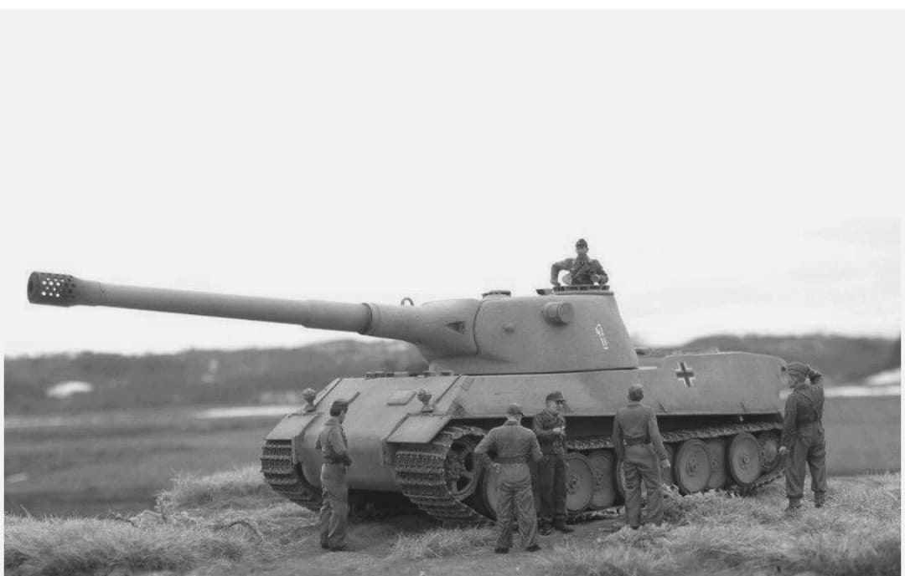
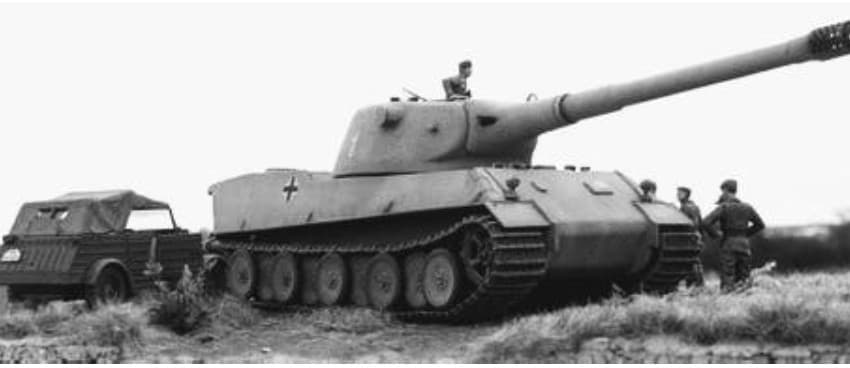

Le projet de char super-lourd de 90 tonnes qui ne vit jamais le jour

Le Panzerkampfwagen VII « Löwe » (Lion) est l'un des projets de chars super-lourds les plus célèbres étiquetés sous le terme de « Paper Panzers » (chars restés à l'état de plans sur papier).
Étudié entre 1941 et 1942 par la firme **Krupp**, ce colosse devait devenir la réponse allemande ultime aux chars lourds soviétiques. Bien qu'aucun prototype à taille réelle n'ait été construit, ses plans détaillés montrent ce qu'aurait pu être le successeur direct du Tiger I.
Deux variantes principales avaient été conçues par les ingénieurs de Krupp : une version légère (Leichter Löwe) de 76 tonnes avec tourelle arrière, et une version lourde (Schwerer Löwe) atteignant **90 tonnes** avec tourelle centrale.
Il devait être armé d'un formidable canon de **10,5 cm KwK L/70** (ou 12,8 cm) et protégé par un blindage frontal atteignant jusqu'à 140 mm d'épaisseur. Les illustrations et montages modernes (comme l'image ci-dessus) permettent de visualiser sa silhouette massive avec un blindage incliné très prononcé.

En juillet 1942, Adolf Hitler ordonne la suspension puis l'abandon définitif du projet *Löwe*. Le gouvernement préféra réorienter toutes ses ressources vers un projet encore plus gigantesque : le **Panzer VIII « Maus »** de 188 tonnes conçu par Ferdinand Porsche.
Bien qu'il n'ait jamais dépassé le stade des maquettes en bois, le travail réalisé sur le Panzer VII servit ultérieurement à alimenter la conception du Tiger II (Tigre Royal).
Page du Musée HOP WW2 – Section Véhicules Terrestres Allemands